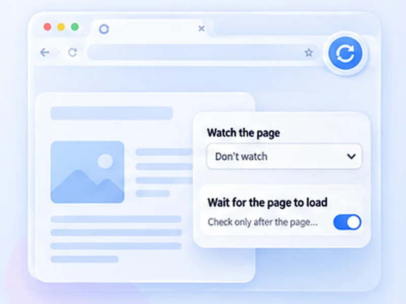

See new jobs as they are posted.
Early applicants get noticed. Keep your saved search open and be alerted when the list changes.

How job boards works
Early applicants get noticed. Keep your saved search open and be alerted when the list changes.
Some job sites restrict automated reloading. Keep intervals long and stop if the site asks you to.
Quick setup
Open your filtered search results.
Choose Stop when content changes with a selector for the results list.
Set Min 120 and Max 300.
Be early without living on the page
Applications sent in the first hours get more attention. Keep your filtered search open, watch the results list for changes, and be notified when something new appears.
Watch the list, not the page
Add a CSS selector for the results container so only new listings trigger an alert. Turn on Pause when you scroll so the page does not reload while you are reading.
Respect the job site
Some job sites restrict automated reloading. A check every two to five minutes is plenty, and most offer email alerts as well.
Use intervals that are reasonable for the site and only monitor pages you are allowed to access. The extension does not get around logins, queues, rate limits or other access restrictions.
A worked example: a filtered search
Run your search with filters applied and sort by newest. Inspect the list of results and note its class, say .job-list. Choose Stop when content changes with .job-list, set Min 120 and Max 300, switch on Pause when you scroll, and press Start. A new posting changes the list and triggers the alert.
Why sort by newest
With newest first, any new listing changes the top of the watched element. With relevance sorting, the list can shuffle between loads and alert you for nothing.
Prefer the site's own alerts where they exist
Email alerts and saved searches are always within the rules. Use a refresh watch for boards that have none.
At a glance
- Watch the results list. Target the list with a selector so only new posts trigger the alert.
- Reasonable timing. A few minutes between checks is enough and respects the site.
- Private. Your searches stay in your browser.
Questions, answered.
Can it apply for jobs?
No. It alerts you to changes.
How often should I check?
Every two to five minutes.
Why does it alert when there is no new job?
Watch the results list with a selector; otherwise adverts and counters trigger it.
Do job sites allow this?
It varies. Read the site's terms.
Can it apply for me?
No. It reloads and alerts only.
Let the page check itself.
Use the free extension for Chrome or Firefox.
Have a different use case in mind?
Share the browser task you would like to make easier. Your idea helps guide what gets built next.